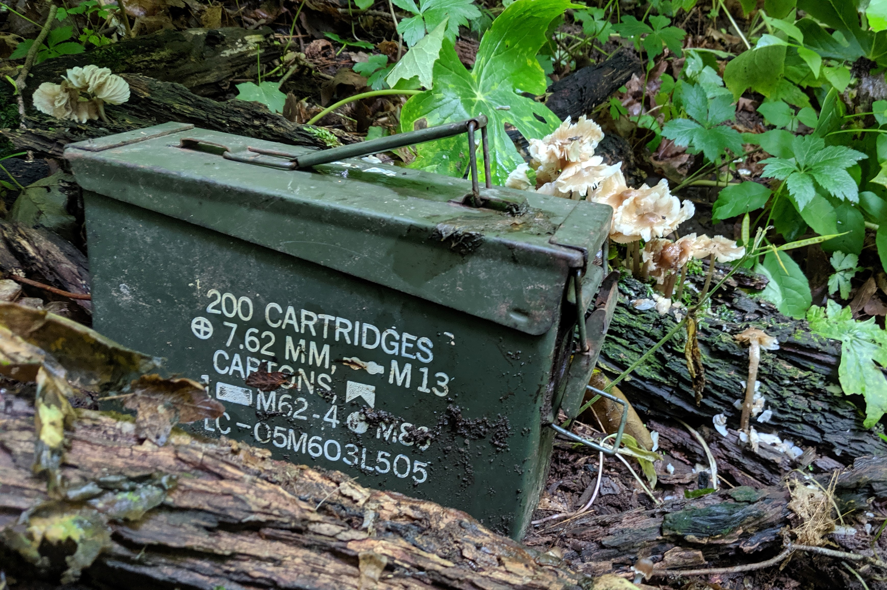
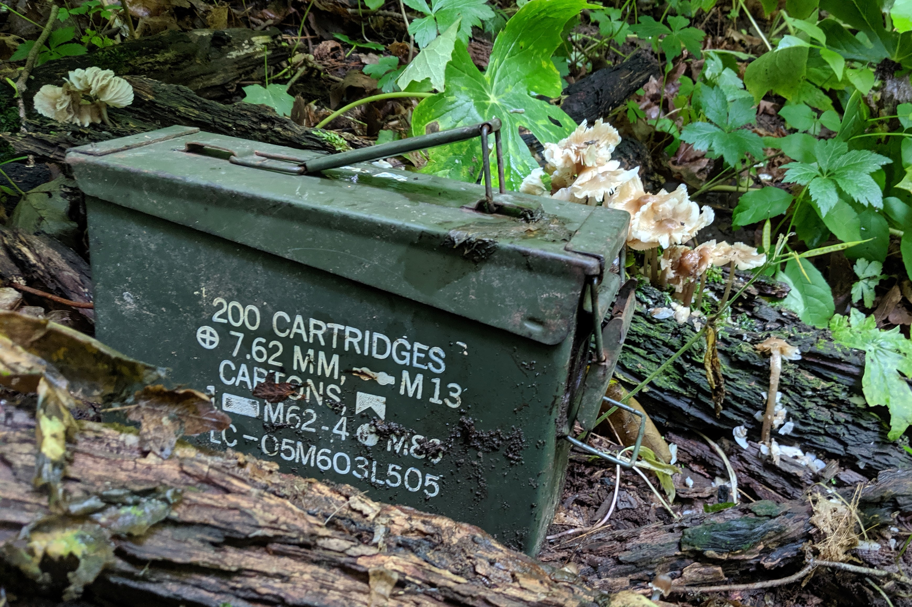

The following photos are a loose collection of pictures I've taken while exploring the world or on the job. There's no particular group or theme, but I will provide context for each cluster as needed. All photos were taken with a Google Pixel 2XL, with minimal editing.


Taken while on break at work on different days.


Taken in Guion, Indiana. In a creekbed near a school.
These were taken at about 2 a.m. in Cincinatti, Ohio, after finishing up a very long remodel.
Taken on a flight back from California.


Taken at a university campus in Columbus, Indiana that I worked in.
Taken while fossile hunting in Caeser Creek State Park in Ohio. Quite a few fossils were found on this expedition.
 


These were taken while geocaching in Greenfield, Indiana. In a public woodlands in town.
Taken while working on a campus in Indianapolis, Indiana.
A photo of a pair of Lorikeet that I took in California. I then attempted a wood burned copy of the top one. Definitely going to try to do a full version one day.
Just some fun guys I met while doing some landscaping.